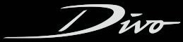
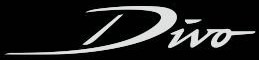

Carlo Bugatti, padre de Ettore y Rembrandt Bugatti, nace el 16 de febrero 1856 en Milán. Hijo del arquitecto y escultor Giovanni Luigi Bugatti, estudia en la Academia de Brera en Milán y la Académie des Beaux-Arts de París. En 1880, comienza su carrera como arquitecto en la obra artística de Milan. En su trabajo destacan cerámicas, pinturas, platería y materiales textiles. Sin embargo,resalta por sus diseños en mobiliario. Influenciado por el Art Nouveau, Carlo Bugatti desarrolla su propio estilo. En 1904, a la edad de 48 años, Carlo Bugatti vende su estudio de Milán y se traslada a París, donde trabaja para los grandes almacenes 'Dufayel' y 'Le Bon Marché'. También produce cerámica conbinada con plata y bronce. Seis años más tarde, abandona París de nuevo para levantar un nuevo estudio en Pierrefonds cerca de Compiègne. De 1914 a 1918, se erige alcalde de la ciudad.
Ettore Arco Isidoro Bugatti nace en Milán el 15 de de septiembre de 1881. Con 17 años comienza su aprendizaje en la fábrica Prinetti y Stucchi ensamblando bicicletas. Sólo un año más tarde, construye su primer vehículo utilizando dos motores De Dion. En 1902, Ettore se inicia en la producción de automóviles en la compañía de Eugène, De Dietrich. Hasta 1904, Ettore Bugatti desarrolla nuevos modelos de la firma De Dietrich y participa en varias carreras. En 1907, Ettore Bugatti se casa con Barbara Maria Guiseppina Mascherpa. Juntos tienen dos hijos y dos hijas. El mismo año, firma un contrato con la fábrica de motores Deutz en Colonia y comienza a construir su propio coche de carreras, que resulta un vehículo extremadamente ligero. Este vehículo sentó la base un par de años más tarde como el primer coche en llevar el nombre de Bugatti - el Bugatti Type 13-.
En 1909, Bugatti termina prematuramente el contrato con Deutz. Con la indemnización por despido alquila una tintorería en desuso en Molsheim (Alsacia), donde funda su propia fábrica de automóviles, Automóviles Ettore Bugatti. El Peugeot 'Bébé' se desarrolla allí en 1911 y se produce bajo licencia de Peugeot. Bugatti también comienza la producción del Type 13. Cuando estalla la Primera Guerra Mundial, Ettore Bugatti se traslada con su familia en primer lugar a Milán y luego a París, donde produce diseños para motores de avión de ocho y dieciséis cilindros. Con el fin de la guerra, la familia se traslada de nuevo a Alsacia (ahora parte de Francia), y abre de nuevo la fábrica de automóviles. Ettore Bugatti pasa a producir automóviles deportivos ligeros y logra el éxito en varias carreras -por ejemplo, la victoria en Le Mans en el año 1920 o una victoria en Brescia en 1921-. Ese mismo año se presenta como prototipo el Type 28, con un gran número de patentes, como el motor ocho cilindros y tres litros. El chasis no solo sirvió como base para el Bugatti Royale, también sirvió como base para futuros vehículos de la firma.
En 1922 se presenta el primer 'touring car' de Bugatti, el Type 30. Se ensamblan más de 600 unidades. Este vehículo tomaba la experiencia en competición pero, también se mostraba ideal para el uso diario. En 1925, según el recuento de Ettore, se salda con 412 victorias en sólo nueve meses para los coches de competición producidas por la marca Bugatti. El Type 35 es el primer modelo que se asocia inevitablemente con la marca Bugatti. Hasta la fecha, sigue siendo el coche de carreras más exitoso de todos los tiempos, con más de 2.000 victorias y podios durante aproximadamente diez años. El Type 35 cuenta con una carrocería en forma de lágrima con un impresionante coeficiente aerodinámico. También es un éxito comercial que sienta las bases de Molsheim. El Bugatti Type 35 era el único coche de la época que podría ser conducido tanto en carreteras públicas y trazados de carreras. 'El automóvil de lujo más grande del mundo, un vehículo para aristócratas y miembros de la realeza'. Eso es lo que Ettore Bugatti considera objetivo con el Type 41 Royale. Un prototipo de este modelo gana el Gran Premio de Alemania en Nürburgring en 1927. El motor del Royale con 12,7 litros de cilindrada supera todos los anteriores puntos de referencia establecidos por vehículos de lujo. Aunque Bugatti planea hacer 25 unidades del Royale, sólo se comercializan tres debido a la crisis económica. Sin embargo, como un hombre de negocios con visión, Ettore Bugatti emplea esos motores en un tren de alta velocidad, encargado por el gobierno francés. Por ello, logra otro éxito financiero para la compañía. En honor a su difunto hermano, se utiliza una escultura de un elefante diseñada por Rembrandt Bugatti en la cubierta del radiador para el Royale.
1930-1940
Estilo e innovación
El Bugatti Type 50 es uno de los coches más avanzados de la época. El doble árbol de levas y el uso de dos válvulas diagonales se consideran pioneros. Aunque este modelo no alcanza el éxito en los circuitos, ocupa un lugar especial en la historia de Bugatti, ya que es uno de los primeros modelos que llevan el sello estilístico de Jean, el hijo de Ettore Bugatti. El formidable bi-plaza Type 55 SuperSport es 'el coche que circula con motor de Grand Prix', que en 1931 reemplaza al Type 43. Para el Type 55, Bugatti utiliza el robusto chasis del Type 47, diseñado originalmente para un pesado motor de 16 cilindros. El resultado es uno de los mejores chasis de la firma Bugatti. Además, se le instala una transmisión de nuevo desarrollo, haciendo que el vehículo sea aún más ágil. Se comercializan un total de trece versiones roadster y nueve coupés. En 1932, se produce el único vehículo diseñado por Ettore Bugatti con un sistema de tracción integral. El Type 53 equipaba el bloque motor del Type 50 junto a un esquema de suspensión independiente en el eje delantero. A diferencia del Type 35, se ensamblan sólo unas pocas unidades del Type 59. Originalmente destinado a tener un motor de 2,8 litros, el coche equipa un motor de 3,3 litros que hizo su debut en el Gran Premio de España en San Sebastián. Sin embargo, aún con una estética sensacional, no podía disimular el hecho que, incluso antes de su primera carrera, este coche ya era técnicamente superado por la competencia alemana.
En 1934, comienza la producción del Type 57, basándose en un diseño realizado por el hijo mayor de Ettore Bugatti. La fábrica compite ahora directamente con fabricantes de automóviles como Delage, Delahaye y Bentley. El Type 57 puede ser pedido a fábrica con varias opciones diferentes de carrocería. El Atalante se considera, sin duda alguna, la versión más bella. También conocido como "falso cabriolet", cuenta con una carrocería coupé de dos puertas, también disponible con un techo retráctil. El Atalante, con sólo 34 vehículos ensamblados, es considerado como una de las creaciones más importantes de Jean Bugatti. El nombre Atalante viene de la mitología griega. Atlanta era una cazadora joven y la mujer más rápida en Grecia. Este vehículo es el último coche de producción de Bugatti. Dos años más tarde, Ettore Bugatti delega la gestión de la fábrica de automóviles a su hijo.
Jean Bugatti, que ya había establecido su reputación como genio de diseño de vehículos con el legendario Type 41 "Royale", el Type 55 SuperSport y el Type 50 Superprofilée, también es responsable de diseñar uno de los Bugatti más bellos: el Tipo 57SC Atlantic. El cuerpo del Atlantic originalmente iba a ser realizada en magnesio -motivo por el que la aleta quedaba clavada en el centro-. Esto no era más que una característica de diseño, pero tuvo su función vital a nivel estructural. En ese momento, era extremadamente difícil soldar el magnesio. Por eso, las dos mitades de la carrocería y las alas estaban unidos. Las cuatro carrocerías del Atlantic fueron finalmente elaboradas en aluminio, pero la disposición de las aletas se mantiene y sigue siendo un detalle llamativo a dia de hoy. El prototipo del Atlántic se expuso en los salones del automóvil de París y Londres en 1935.
Jean Bugatti sigue al frente del legado de su padre, hasta llevar la responsabilidad total de la producción de automóviles en 1936. También hace cargo de Meo Constantini como jefe del equipo de carreras de la compañía. El 11 de agosto de 1939, Jean Bugatti sufre un accidente fatal durante una prueba de conducción en un Bugatti Type 57C, que había ganado las 24 Horas de Le Mans poco antes. Con 30 años de edad, sufre un accidente a más de 200 Km/h. colisionando contra un árbol en el intento de evitar a un ciclista. En 1940, debido a la ocupación alemana, se fuerza la venta de la factoria de Molsheim al empresario Hans Trippel.
1940-1963
Duros años de posguerra
Después de la guerra, la factoría Bugatti vuelve a manos de la familia. Muchos son los intentos para volver a la producción pero, debido a problemas financieros, Bugatti no puede desarrollar una nueva gama de vehículos. La primera victoria en competición pasada la guerra sucede en 1945, en el Gran Premio de Bois de Boulogne (Paris). Ettore Bugatti junto a Jean-Pierre Wimille se hacen con la victoria en un Bugatti Type 59/50B. Unos años más tarde, Ettore Bugatti fallece en Paris en Agosto de 1947. En 1948, Pierre Marco se hace con el cargo de director de la firma. Por el momento, la compañía produce pequeñas series del Type 57 con ligeras modificaciones -pasando a llamarse Type 101-. En 1956 se paraliza la producción de vehículos. Un total de 7900 unidades aproximadamente salen de la factoría desde su fundación. En 1963, Hispano-Suiza compra la compañía.
1987-1998
Una nueva vida para Bugatti
En 1987, el empresario italiano, Romano Artioli adquiere los derechos de la marca Bugatti y funda Bugatti Automobili S.p.A. en Campogalliano, Italia. Cuatro años después, Artioli produce un superdeportivo con la ayuda de algunos de los mayores talentos de la industria del automóvil. El coche se presenta al mundo el 15 de septiembre de 1991 sobre Place de la Défense en París. El Bugatti EB 110 se presenta como un digno representante de la tradición de la marca. Es el primer coche del mundo con un chasis de fibra de carbono, una caja de cambios de seis relaciones, un motor doce cilindros con cinco válvulas, cuatro turbocompresores y tracción permanente a las cuatro ruedas. En la última evolución -el Bugatti EB 110 SuperSport - alcanza una velocidad máxima de 351 km/h. Años más tarde, la compañía presenta bancarrota. Una empresa con base en Nuremberg -Dauer Racing- toma el control de la producción y sigue manteniendo a la venta el EB 100. Diez nuevas unidades son ensambladas y comercializadas.
1998-2010
Volkswagen adquiere Bugatti
En Mayo de 1998, el grupo Volkswagen compra los derechos de la marca Bugatti y presenta el EB 118. Este vehículo, un coupé de cuatro plazas con un motor de 18 cilindros, es diseñado por Giorgetto Giugiario en el estudio 'Italdesign'. Este concepto sirve de base para futuros modelos. Después del EB 118, son tres conceptos los que presenta Bugatti en distintos eventos del motor. El Bugatti EB 218 se presenta en Ginebra como una berlina de cuatro puertas. Le sigue el EB 18/3 en el Salón de Frankfurt. Unas semanas más tarde, Bugatti presenta en el Salón del Automovil de Tokyo de 1999, el EB 18/4, que sirve como base para el futuro desarrollo del Bugatti Veyron.
En el año 2000, se presenta el Bugatti Veyron EB 16/4, una variación del 18/4 presentada el año anterior. El Bugatti Veyron 16/4 cuenta con un motor de 16 cilindros en W y ocho litros de cilindrada, capaz de desarrollar una potencia máxima de 630 CV. Debido al interés y la alta aceptación del concepto, se presenta la versión de producción en 2001. Esta versión cuenta con una potencia máxima aumentada hasta los 1.001 CV, ocho litros de cilindrada, cuatro turbocompresores, y un par máximo de 1.250 Nm. El W16 de 8,0 litros, equivale a dos motores V8 atornillados entre sí. Cada cilindro posee cuatro válvulas (sumando un total de 64), pero la configuración de cada banco VR8 permite dos árboles de levas para accionar los cilindros. De esta manera, se necesitan sólo cuatro árboles de levas para todo el conjunto. La transmisión es una caja de doble embrague con siete relaciones de transmisión, levas de cambio elaboradas en magnesio, y un salto entre marchas de menos de 150 milisegundos. El Bugatti Veyron puede circular ya sea en modo semi-automático o totalmente automático. Además, cuenta con tracción permanente a las cuatro ruedas mediante un sistema de tracción Haldex. Semejantes especificaciones necesitan ser puestas en contacto con el aslfato. Por ello, el Bugatti Veyron utiliza unos compuestos Michelin PAX. Son unos neumáticos 'run-flat' especiales, diseñados específicamente para alcanzar la velocidad máxima del vehículo. Estos compuestos tienen un coste de 25.000$ por juego. El peso en vacío del conjunto está en torno a los 1.880 kilogramos. Esta cifra le da al vehículo una relación peso-potencia, de acuerdo con cifras de Volkswagen, de 530 CV por tonelada.
El 19 de Abril de 2005, oficiales alemanes de control y homologación registran una velocidad máxima con el Bugatti Veyron de 408,47 km/h. Esta velocidad se obtiene durante las sesiones de prueba en la pista privada de Ehra-Lessien, propiedad del Grupo Volkswagen. La velocidad máxima estándar del Veyron se sitúa en 343 Km/h. Cuando el coche alcanza los 220 Km/h, el sistema hidráulico hace descender el coche hasta que lo situa con una distancia libre al suelo de unos 9 cm. Al mismo tiempo, el alerón queda desplegado. Circulando de este modo, el conjunto aerodinámico ofrece 3.425 newtons de carga aerodinámica, manteniendo el coche en continuo contacto con el asfalto. El modo de velocidad máxima es un procedimiento que debe hacerse mientras el vehículo está en parado. El conductor debe cambiar a una llave especial que introduce a la izquierda del asiento. Una vez introducida, se inician una lista de comprobaciones para determinar si coche y conductor están preparados para alcanzar los 407 Km/h. Si es así, el alerón trasero se retrae, los difusores de aire delanteros permanecen en posición cerrada y la distancia al suelo se reduce a 6,5 cm.
Los frenos del Bugatti Veyron cuentan con discos perforados, realizados en fibra de carbono con ventilación reforzada. Los discos de carburo de silicio, fabricados por SGL Carbon, tienen una resistencia mucho mayor al debilitamiento en comparación con los discos de fundición convencionales. Las ligeras pinzas de freno monobloque en aleación de aluminio son elaboradas por AP Racing; poseen ocho pistones de titanio en el eje delantero y seis pistones en el trasero. Bugatti afirma que la deceleración máxima del vehículo es de 1,3 g. con neumáticos de carretera. A velocidades superiores a los 200 Km/h, el alerón trasero también actúa como freno gracias a su ajuste en ángulo a 55°. Con un tiempo de respuesta de tan solo 0,4 segundos una vez aplicados los frenos, suma al conjunto de frenado una fuerza de 0,68 g. en deceleración. Bugatti afirma que el Veyron es capaz de realizar una parada de emergencia desde 400 km/h en menos de 10 segundos, con una distancia recorrida en este tiempo equivalente a medio kilómetro.
En otoño de 2005, se inicia la producción del Bugatti Veyron. En ese momento, es el ejercicio de ingeniería más complejo que se ve en la industria del motor. En 2008, los ingenieros de Bugatti, combinan un superdeportivo de 1.001 CV con una carrocería 'open-top' dando como resultado el Bugatti Veyron Grand Sport. Este vehiculo se presenta en el concurso de elegancia de Peeble Beach. En una subasta benéfica, el primer chasis alcanza un valor de 3,2 millones de dolares. Marcando el centenario de la compañía, se presentan cuatro modelos especiales conmemorativos en el concurso de elegancia de Villa d'Este. Los cuatro modelos poseen detalles que recuerdan al Bugatti Type 35 y aquellos años de éxito de la compañía en competicion. Estos exclusivos modelos se presentan en cuatro colores haciendo honor a los paises que tenian presencia en competicion por aquella época: azul representando a Francia, rojo representando a Italia, verde representando al Reino Unido, y blanco representando a Alemania.
En 2010, Bugatti rompe de nuevo el record de velocidad para vehículos de producción con el Veyron 16.4 Super Sport. Bajo el atento control de los oficiales alemanes de control y homologación, el Veyron Super Sport alcanza una velocidad máxima de 431,072 Km/h, cifra que lo coloca en el Record Guinness como el vehículo de producción más rápido del mundo. La variante Super Sport del Veyron es la evolución más salvaje de la gama Veyron. Cuenta con una potencia máxima de 1.200 CV y un par motor máximo de 1.500 Nm. Gracias a estas cifras, es capaz de realizar un 0-100 Km/h en tan solo 2,5 segundos.
2016-Actualidad
El monstruo de Molsheim
El Bugatti Chiron hace su debut en el Salón de Ginebra y, sin duda, es una de las mayores estrellas de la muestra. El sucesor del Bugatti Veyron cuenta con 1.500 CV de potencia y un par motor máximo de 1.600 Nm constante desde 2.000 a 6.000 revoluciones por minuto. Además, el fabricante anuncia unos altos niveles de eficacia, seguridad y comodidad. El Bugatti Chiron es más alto y ancho que su precedesor, lo que permite ofrecer más espacio, sobre todo para las piernas y una ergonomía interior mejorada. Además, el espacio libre para la cabeza se ha incrementado 12 mm. Su diseño exterior está inspirado en el legendario Bugatti Type 57SC Atlantic. Los neumáticos Michelin del nuevo Bugatti Chiron han sido probados en instalaciones aeroespaciales. Las dimensiones son de 285/30 R20 en la parte delantera y 355/25 R21 en la trasera. Estas ruedas se someten a un par máximo de 5.000 Nm y cada caucho está expuesto a una fuerza centrífuga de 3.800 g, es decir, 3.800 veces la fuerza de la gravedad. Toda esta fuerza es fruto del nuevo motor W16. Según informa Bugatti, el motor del Veyron ha sido completamente rediseñado. Por ello, este bloque de 8,0 litros con cuatro turbcompresores es capaz de ofrecer un 25% más de potencia que el modelo anterior. Es decir, 1.500 CV. El Bugatti Chiron utiliza un sistema de turbcompresores de dos etapas: por debajo de las 3.800 vueltas solo funcionan dos y, a partir de esta cifra, se suman los otros dos. Tambíen llama la atención los 60.000 litros de aire por minuto que son capaces de introducir en los cilindros los turbocompresores o los 800 litros de agura por minuto que mueve la bomba de agua. La velocidad máxima del Bugatti Chiron es de 420 km/h y está autolimitada.
El Bugatti Chiron sigue siendo un vehículo de tracción integral y envía toda la potencia a los ejes gracias a una caja de cambios de doble embrague con siete relaciones capaz de admitir los 1.600 Nm de par motor. El Bugatti Chiron utiliza un sistema de frenos que toma toda su tecnología de la Fórmula 1, usa unos frenos de de carbono con una base de carburo de silicio (CSIC). Esta material hace que el disco de freno sea más ligero y que tenga mayor resistencia a la corrosión. Respecto al Bugatti Veyron, los discos tienen 20 mm más de diámetro y son 2 milímetros más gruosas. Las pinzas están fabricadas en titanio y en el eje delantero tienen pinzas de ocho pistones y el eje trasero son de seis. Otro de las grandes atractivos del Bugatti Chiron es el nuevo chasis adaptativo con cinco programas de conducción: Lift, EB Auto, Autobahn, Handling y Top Speed. De este modo, se puede aprovechar al 100% el rendimiento del vehiculo. El sistema es capaz de ajustar la dureza de los amortiguadores, la dirección asistida, la tracción a las cuatro ruedas, el diferencial trasero o el control de estabilidad. El modo Lift o elevación se utiliza cuando el coche circula por una zona de badenes. Cuando el coche supera los 50 Km/h entra automáticamente en el modo EB Auto y al superar los 180 Km/h pasa a la configuración Autobahn.


 
